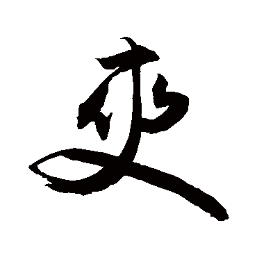

|  |
在2013年，有兩位有才氣、有能力、有抱負的設計師，他們決定讓自己的設計才華能讓世人看見，
他們分別是葉胤呈先生和廖祐霆先生，但創業之路是相當艱辛的，他們遭遇了許許多多的困難，
一次又一次的失敗並不是打擊他們的信心，而是在砥礪他們心志，在考驗他們對於成功的渴望。
但他們堅信當想要成功時，在他們面前馬上就出現一面牆，牆的目的不是把他們排除在成功之外，
而是要證明他們多麼想要成功，所以他們的堅持換來了回報。在2014年他們遇到了林柏穎董事長小朋友，
這一位董事長看到他們身上的熱情，看到了他們眼中的堅持，所以決定好好的幫助他們，
讓他們的夢想可以實現，這讓兩位年輕有才的設計師非常的感動，他們多年來的想得以實現，
在林董事長小朋友的支持，他們終於在2015年在網路上創立了一間名叫"爽商店"的網路商店，
但在這時林董事長小朋友的公司驚傳破產，孑然一身的林董事長小朋友走投無路，但兩位設計師不忘恩典，
讓林董事長小朋友跟他們一起奮鬥，相信依林董事長小朋友多年的經商經驗和兩位才華洋溢的設計師的合作之下，
"爽商店"的未來肯定能發光發熱。
|